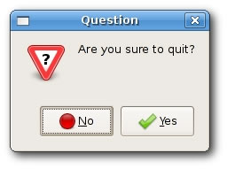
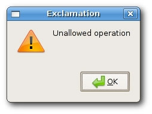
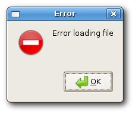
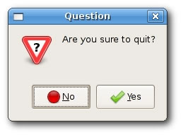
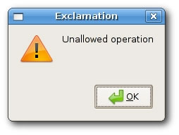
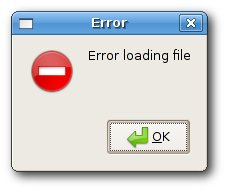
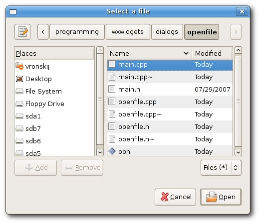
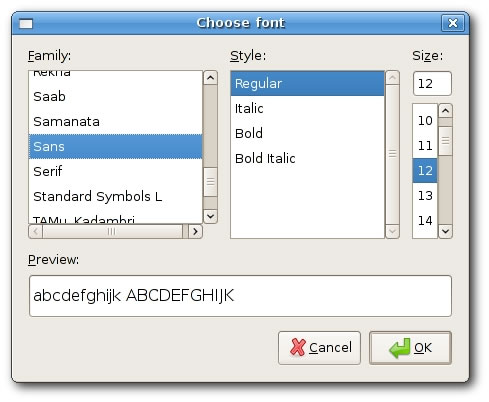

Dialogs
Dialog windows or dialogs are an indispensable part of most modern GUI applications. A dialog is defined as a conversation between two or more persons. In a computer application a dialog is a window which is used to "talk" to the application. A dialog is used to input data, modify data, change the application settings etc. Dialogs are important means of communication between a user and a computer program.
There are essentially two types of dialogs. Predefined dialogs and custom dialogs.
Predefined dialogs
Predefined dialogs are dialogs available in the wxWidgets toolkit. These are dialogs for common programming tasks like showing text, receiving input , loading and saving files etc. They save programmer's time and enhance using some standard behaviour.
Message dialogs
Message dialogs are used to show messages to the user. They are customizable. We can change icons and buttons that will be shown in a dialog.
messages.bmxSuperStrict Framework wx.wxApp Import wx.wxFrame Import wx.wxPanel Import wx.wxMessageDialog Const ID_INFO:Int = 1 Const ID_ERROR:Int = 2 Const ID_QUESTION:Int = 3 Const ID_ALERT:Int = 4 New MyApp.Run() Type MyApp Extends wxApp Method OnInit:Int() Local msgs:Messages = Messages(New Messages.Create(Null, .. wxID_ANY, "Messages", -1, -1, 210, 110)) msgs.Show(True) Return True End Method End Type Type Messages Extends wxFrame Method OnInit() Local panel:wxPanel = New wxPanel.Create(Self, wxID_ANY) Local hbox:wxBoxSizer = New wxBoxSizer.Create(wxHORIZONTAL) Local gs:wxGridSizer = New wxGridSizer.CreateRC(2, 2, 2, 2) Local btn1:wxButton = New wxButton.Create(panel, ID_INFO, "Info") Local btn2:wxButton = New wxButton.Create(panel, ID_ERROR, "Error") Local btn3:wxButton = New wxButton.Create(panel, ID_QUESTION, "Question") Local btn4:wxButton = New wxButton.Create(panel, ID_ALERT, "Alert") Connect(ID_INFO, wxEVT_COMMAND_BUTTON_CLICKED, ShowMessage1) Connect(ID_ERROR, wxEVT_COMMAND_BUTTON_CLICKED, ShowMessage2) Connect(ID_QUESTION, wxEVT_COMMAND_BUTTON_CLICKED, ShowMessage3) Connect(ID_ALERT, wxEVT_COMMAND_BUTTON_CLICKED, ShowMessage4) gs.Add(btn1, 1, wxEXPAND) gs.Add(btn2, 1) gs.Add(btn3, 1) gs.Add(btn4, 1) hbox.AddSizer(gs, 0, wxALL, 15) panel.SetSizer(hbox) Center() End Method Function ShowMessage1(event:wxEvent) Local dial:wxMessageDialog = New wxMessageDialog.Create(Null, .. "Download completed", "Info", wxOK) dial.ShowModal() dial.Free() End Function Function ShowMessage2(event:wxEvent) Local dial:wxMessageDialog = New wxMessageDialog.Create(Null, .. "Error loading file", "Error", wxOK | wxICON_ERROR) dial.ShowModal() dial.Free() End Function Function ShowMessage3(event:wxEvent) Local dial:wxMessageDialog = New wxMessageDialog.Create(Null, .. "Are you sure to quit?", "Question", wxYES_NO | wxNO_DEFAULT | .. wxICON_QUESTION) dial.ShowModal() dial.Free() End Function Function ShowMessage4(event:wxEvent) Local dial:wxMessageDialog = New wxMessageDialog.Create(Null, .. "Unallowed operation", "Exclamation", wxOK | wxICON_EXCLAMATION) dial.ShowModal() dial.Free() End Function End Type
In our example, we have created four buttons and put them in a grid sizer. These buttons will show four different dialog windows. We create them by specifying different style flags.
Local dial:wxMessageDialog = New wxMessageDialog.Create(NULL, ..
"Error loading file", "Error", wxOK | wxICON_ERROR)
dial.ShowModal()
..
dial.Free()
The creation of the message dialog is simple. We set the dialog to be a toplevel window by providing NULL as a parent. The two strings provide the message text and the dialog title. We show an ok button and an error icon by specifying the wxOK and wxICON_ERROR flags. To show the dialog on screen, we call the ShowModal() method.
Note that if you want to reclaim the memory used by the dialog more quickly, call the Free() method. It will be called when the GC runs, but you may want to do it yourself.
 





wxFileDialog
This is a common dialog for opening and saving files.
openfile.bmxSuperStrict Framework wx.wxApp Import wx.wxFrame Import wx.wxTextCtrl Import wx.wxFileDialog New MyApp.Run() Type MyApp Extends wxApp Method OnInit:Int() Local open:FileOpen = FileOpen(New FileOpen.Create(Null, .. wxID_ANY, "Openfile", -1, -1, 300, 200)) open.Show(True) Return True End Method End Type Type FileOpen Extends wxFrame Field tc:wxTextCtrl Method OnInit() Local menubar:wxMenuBar = New wxMenuBar.Create() Local file:wxMenu = New wxMenu.Create() file.Append(wxID_OPEN, "&Open") menubar.Append(file, "&File") SetMenuBar(menubar) Connect(wxID_OPEN, wxEVT_COMMAND_MENU_SELECTED, OnOpen) tc = New wxTextCtrl.Create(Self, wxID_ANY, "", ,, ,, wxTE_MULTILINE) Center() End Method Function OnOpen(event:wxEvent) Local frame:FileOpen = FileOpen(event.parent) Local openFileDialog:wxFileDialog = New wxFileDialog.Create(frame) If openFileDialog.ShowModal() = wxID_OK Then frame.tc.LoadFile(openFileDialog.GetPath()) End If End Function End Type
In our example, we display a open file menu item and a simple multiline text control. If we click on the open file menu item a wxFileDialog is displayed. We can load some simple text files into the text control.
tc = New wxTextCtrl.Create(Self, -1, "", ,, ,, wxTE_MULTILINE)
We load text files into this text control.
Local openFileDialog:wxFileDialog = New wxFileDialog.Create(frame)
Here we create a wxFileDialog. We use the default parameters. (The open file dialog is the default dialog.)
If openFileDialog.ShowModal() = wxID_OK Then
tc.LoadFile(openFileDialog.GetPath())
End If
Here we show the dialog. We get the selected file name and load the file into the text control.

wxFontDialog
This is a common dialog for choosing a font.
fontdialog.bmxSuperStrict Framework wx.wxApp Import wx.wxFrame Import wx.wxPanel Import wx.wxStaticText Import wx.wxFontDialog Const ID_FONTDIALOG:Int = 1 New MyApp.Run() Type MyApp Extends wxApp Method OnInit:Int() Local change:ChangeFont = ChangeFont(New ChangeFont.Create(Null, .. wxID_ANY, "Change font", -1, -1, 300, 200)) change.Show(True) Return True End Method End Type Type ChangeFont Extends wxFrame Field st:wxStaticText Method OnInit() Local panel:wxPanel = New wxPanel.Create(Self, -1) Local menubar:wxMenuBar = New wxMenuBar.Create() Local file:wxMenu = New wxMenu.Create() file.Append(ID_FONTDIALOG, "&Change font") menubar.Append(file, "&File") SetMenuBar(menubar) Connect(ID_FONTDIALOG, wxEVT_COMMAND_MENU_SELECTED, OnOpen) st = New wxStaticText.Create(panel, wxID_ANY, "The Agoge", 20, 20) Center() End Method Function OnOpen(event:wxEvent) Local frame:ChangeFont = ChangeFont(event.parent) Local fontDialog:wxFontDialog = wxFontDialog.CreateFontDialog(frame) If fontDialog.ShowModal() = wxID_OK Then frame.st.SetFont(fontDialog.GetFontData().GetChosenFont()) End If End Function End Type
In this example, we will change the font of a static text example.
st = New wxStaticText.Create(panel, wxID_ANY, "The Agoge", 20, 20)
Here we display a static text on the panel. We will change it's font using the wxFontDialog.
Local fontDialog:wxFontDialog = New wxFontDialog.Create(frame)
If fontDialog.ShowModal()== wxID_OK Then
frame.st.SetFont(fontDialog.GetFontData().GetChosenFont())
End If
In these code lines, we show the font dialog. Then we get the choosen font. And finally, we change the font of the static text, we created earlier.

A custom dialog
In the next example we create a custom dialog. An image editing application can change a color depth of a picture. To provide this funcionality, we could create a suitable custom dialog.
customdialog.bmxSuperStrict Framework wx.wxApp Import wx.wxDialog Import wx.wxPanel Import wx.wxStaticBox Import wx.wxButton Import wx.wxRadioButton Import wx.wxTextCtrl New MyApp.Run() Type MyApp Extends wxApp Method OnInit:Int() Local sim:CustomDialog = CustomDialog(New CustomDialog.Create_(Null, .. wxID_ANY, "CustomDialog", -1, -1, 250, 230)) sim.Show(True) Return True End Method End Type Type CustomDialog Extends wxDialog Method OnInit() Local panel:wxPanel = New wxPanel.Create(Self, -1) Local vbox:wxBoxSizer = New wxBoxSizer.Create(wxVERTICAL) Local hbox:wxBoxSizer = New wxBoxSizer.Create(wxHORIZONTAL) Local st:wxStaticBox = New wxStaticBox.Create(panel, -1, .. "Colors", 5, 5, 240, 150) Local rb:wxRadioButton = New wxRadioButton.Create(panel, -1, .. "256 Colors", 15, 30,,, wxRB_GROUP) Local rb1:wxRadioButton = New wxRadioButton.Create(panel, -1, .. "16 Colors", 15, 55) Local rb2:wxRadioButton = New wxRadioButton.Create(panel, -1, .. "2 Colors", 15, 80) Local rb3:wxRadioButton = New wxRadioButton.Create(panel, -1, .. "Custom", 15, 105) Local tc:wxTextCtrl = New wxTextCtrl.Create(panel, -1, "", 95, 105) Local okButton:wxButton = New wxButton.Create(Self, -1, .. "Ok", -1 -1, 70, 30) Local closeButton:wxButton = New wxButton.Create(Self, -1, .. "Close", -1, -1, 70, 30) hbox.Add(okButton, 1) hbox.Add(closeButton, 1, wxLEFT, 5) vbox.Add(panel, 1) vbox.AddSizer(hbox, 0, wxALIGN_CENTER | wxTOP | wxBOTTOM, 10) SetSizer(vbox) Centre() ShowModal() Destroy() End Method End Type
This example is a dialog based application. We illustrate, how to create a custom dialog.
Type CustomDialog Extends wxDialog
A custom dialog is based on the wxDialog type.
Local st:wxStaticBox = New wxStaticBox.Create(panel, -1, .. "Colors", 5, 5, 240, 150) Local rb:wxRadioButton = New wxRadioButton.Create(panel, -1, .. "256 Colors", 15, 30,,, wxRB_GROUP)
Note that wxStaticBox widget must be created before the widgets that it contains, and that those widgets should be siblings, not children, of the static box.
ShowModal() Destroy();
To show the dialog on the screen, we call the ShowModal() method. To clear the dialog from the memory, we call the Destroy() method.